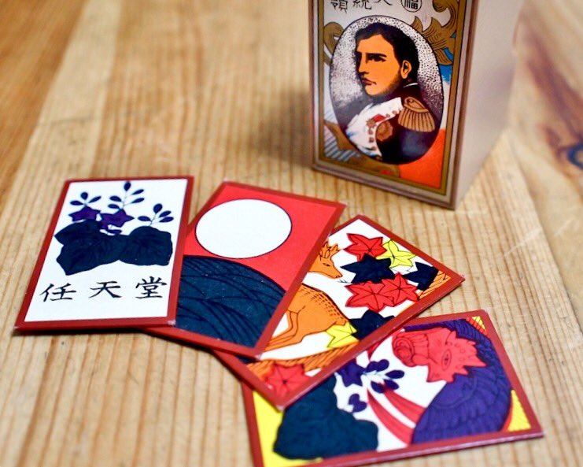

Historia sobre el Hanafuda
¿Qué es el Hanafuda?
Hanafuda es una baraja de cartas karuta (barajas tradicionales de naipes japoneses), que se inventó a mediados del siglo XVI. Por lo general, son más pequeñas que las cartas occidentales, solo 5,4 x 3,2 cm, pero más gruesas y rígidas. En el anverso de cada carta se encuentra una representación de plantas, tanzaku (短冊), animales, pájaros u objetos hechos por humanos. Solo una de estas cartas representa a una persona. Su reverso suele ser liso, sin ningún patrón ni diseño, y tradicionalmente coloreado en rojo o negro. Se usan para varios juegos de mesa de hacer parejas, o juegos de pesca, como son conocidos allí, entre estos los más comunes serían Koi-Koi y Hachi-Hachi.
En Japón, es una de las dos barajas karuta más populares junto con uta-garuta ('el juego de los cien poetas').
HANAFUDA
Origen: Japón
Período: Edo
Cartas: 48
Palos: 12
Dificultad: Media
Fuera de Japón
En Corea, las cartas hanafuda se conocen con el nombre hwatu (coreano: 화투, hanja: 花鬪, 'flower battle') y están hechas de plástico con un reverso texturado. El juego más popular al que se suele jugar es Go-Stop (coreano: 고스톱). Aquí es muy común que se juegue durante días festivos especiales tales como el Año Nuevo coreano y Chuseok (coreano: 추석). Jugar a Go-Stop con la familia durante las reuniones de los días festivos se ha convertido en parte de la cultura de los habitantes coreanos desde hace muchos años.
En Hawái, se utilizan para jugar a Sakura. También se usan en la colonia japonesa anterior de Micronesia, donde se le conoce como hanahuda y se utilizan para jugar un juego de cuatro personas, que a menudo se juega en parejas.
Época Antigua
Aunque los juegos de cartas refinados eran jugados en Japón por la nobleza desde hacía años, no eran de uso general, ni jugados por las clases más bajas. Esto cambió en el décimo octavo año de Tenmon (1549 d. C.) cuando Francisco Javier llegó a Japón. La tripulación de su nave llevaba unas cartas llamadas Hombre (baraja portuguesa de 48 cartas) de Europa, y reglamentos para jugar con estas, y más específicamente, juegos de cartas con apuesta, que llegaron a ser extremadamente populares entre el pueblo japonés.
Cuando Japón cerró posteriormente todo el contacto con el mundo occidental en 1633, las cartas de juego extranjeras fueron prohibidas. A pesar de esto, seguían siendo muy populares. El juego privado con apuestas durante el shogunato Tokugawa era ilegal. Pero como los juegos de cartas en sí mismos no fueron prohibidos, las nuevas cartas fueron creadas con diversos diseños para evitar la restricción. Por ejemplo, un jugador anónimo diseñó una baraja conocida como Unsun Karuta, cuyas cartas fueron adornadas con arte chino: guerreros, armamento, armadura, y dragones chinos. El mazo consistía en 75 cartas, y no se hizo tan popular como los juegos de cartas occidentales habían sido, simplemente debido a la dificultad de familiarizarse con el sistema. Cuando el juego con apuesta con algún diseño particular de la baraja llegó a ser demasiado popular, el gobierno prohibió esas cartas para restringir la actividad, que entonces incitó la creación de nuevas cartas. Este juego del gato y del ratón entre el gobierno y los jugadores rebeldes dio lugar a la creación de muchos diseños diferentes. Durante la era del Edo y las eras de Meiwa, de Anei, y de Tenmei (hacia 1765-1788), un juego llamado Mekuri Karuta tomó el lugar de Unsun Karuta. Era una baraja de 48 cartas dividida en 4 palos de 12, y llegó a ser terriblemente popular y era una de las formas más comunes de jugar con apuesta en este periodo. De hecho, llegó a ser tan de uso general para jugar que fue prohibido en 1791, durante la era de Kansei. Durante las décadas siguientes, varias nuevas barajas fueron desarrolladas y prohibidas después porque se usaron casi exclusivamente para jugar con apuesta.
Sin embargo, el gobierno comenzó a darse cuenta de que alguna forma de baraja para juegos de cartas sería utilizada siempre por la gente común, y relajó sus leyes contra el juego. El resultado de todo esto fue un juego llamado Hanafuda, que combinó juegos japoneses tradicionales con las cartas con las que se jugaba al estilo occidental. Como las cartas hanafuda no tienen números (el propósito principal es asociar imágenes) y se tarda bastante tiempo para terminar una partida comparado con otros juegos, tiene un uso parcialmente limitado para jugar con apuesta. Sin embargo, es todavía posible jugar con apuesta asignando puntos a las combinaciones de imágenes. No obstante, los juegos de cartas no fueron ya tan populares como habían sido, debido a la represión gubernamental del pasado.
Época Moderna
Las cartas hanafuda se hicieron más populares durante la época moderna cuando Fusajirō Yamauchi fundó la empresa Nintendo en 1889 con el propósito de producir y vender cartas hanafuda hechas a mano. Aunque Nintendo se ha enfocado en producir videojuegos desde la década 1970, continúa produciendo esta clase de cartas en la región de Japón, incluidos conjuntos temáticos de hanafuda basados en Mario, Pokémon y Kirby. Un juego de Koi-Koi jugado con hanafuda está incluido en Clubhouse Games (2006) de Nintendo para Nintendo DS y Clubhouse Games: 51 Worldwide Classics (2020) para Nintendo Switch.
Aunque hoy en día las cartas hanafuda japonesas modernas se fabrican principalmente por Oishi Tengudo (1800) o Nintendo (1889), docenas de otras empresas han fabricado hanafuda, como Angel, Tamura Shogundo, Matsui Tengudo, Ace, Maruē y muchas más.
Es probable que las cartas hanafuda se introdujeran en Corea a finales de la década 1890 y en Hawái a principios del siglo XX. Desde entonces, empresas y particulares de Corea y Hawái han producido sus propias cartas hanafuda, a veces adaptando la imaginería japonesa original para adecuarse a ambas culturas. También se han creado para el público occidental barajas que fusionan hanafuda con Toranpu (トランプ, "Trumps", también conocida como la baraja estándar de 52 cartas). Estas barajas tienen índices en todas sus cartas e introducen un decimotercer palo que varía considerablemente según el fabricante (comodines, flores, objetos de imaginería japonesa, se dejan en blanco o se usan como palo de "nieve", se dejan como Reyes del occidente, etc.).